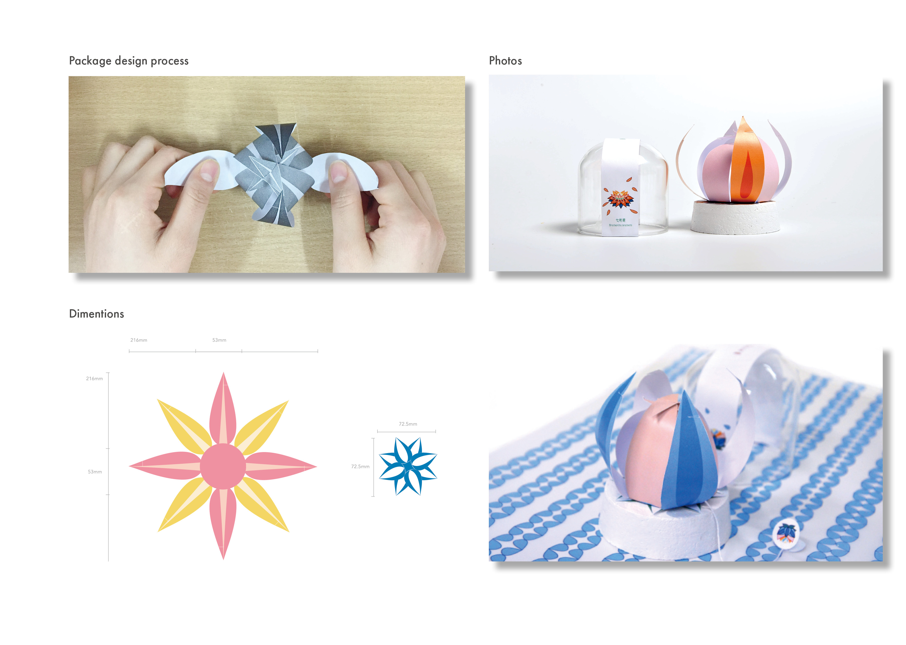

TIBETAN TEA
VI & Packagingn
In Tibet, the most commonly used and revered colors are mainly white, blue, red, yellow and green. These five colors symbolize the five original sources specified in "Bonismo", a Tibetan primitive religion, as well as the five Tibetan primary colors. In particular, white, blue, red, yellow and green each represents cloud, sky, fire, land, and water, respectively.
For this project, led my team to Tibet feel the culture and used Adobe systems software to make vector icons as visual identities of each scented tea. Also made the packaging and the home page design.
